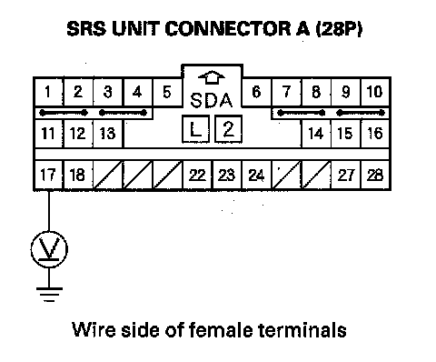
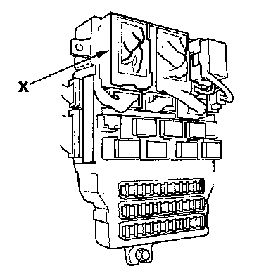
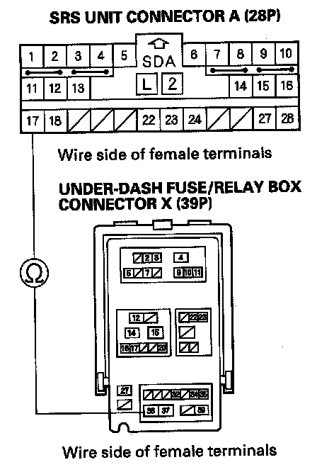

DTC A1-1x
DTC A1-1x ("x" can be 0 thru 9 or A thru F): Faulty Power supply (VA Line)NOTE: Before doing this troubleshooting procedure, review SRS Precautions and Procedures.
1. Erase the DTC memory.
2. Turn the ignition switch ON (II), and check that the SRS indicator comes on for about 6 seconds and then goes off.
3. Read the DTC.
Is DTC A1-1x indicated?
YES - Go to step 4.
NO - Intermittent failure, the system is OK at this time. Go to Troubleshooting Intermittent Failures. If another DTC is indicated, go to the DTC Troubleshooting Index.
4. Turn the ignition switch OFF.
5. Check the No. 20 (7.5 A) fuse in the under-dash fuse/relay box.
Is the fuse OK?
YES - Go to step 6.
NO - Replace the fuse, then turn the ignition switch ON (II). If the fuse blows again, check for a short in the No. 20 (7.5 A) fuse circuit (dashboard wire harness, floor wire harness, or ODS unit harness).
6. Disconnect the negative cable from the battery, and wait for 3 minutes.
7. Disconnect the SRS unit connector A (28P) from the SRS unit.
8. Turn the ignition switch ON (II).

9. Connect a voltmeter between the No. 17 terminal of SRS unit connector A (28P) and body ground. Turn the ignition switch ON (II), and measure the voltage. There should be battery voltage when the ignition is on.
Is there battery voltage?
YES - Faulty SRS unit or poor connection at SRS unit connector (A) 28P and the SRS unit. Check the connection between the connector and the SRS unit. If the connection is OK, replace the SRS unit.
NO - Go to step 10.
10. Turn the ignition switch OFF.

11. Disconnect under-dash fuse/relay box connector X (39P).

12. Measure the resistance between the No. 36 terminal of under-dash fuse/relay box connector X (39P) and the No. 17 terminal of SRS unit connector A (28P). There should be 0 - 1.0 ohm.
Is the resistance as specified?
YES - Open in the under-dash fuse/relay box or poor contact between connector X (39P) and the under-dash fuse/relay box; check the connection. If the connection is OK, replace the under-dash fuse/relay box.
NO - Open in the dashboard wire harness; replace the dashboard wire harness.